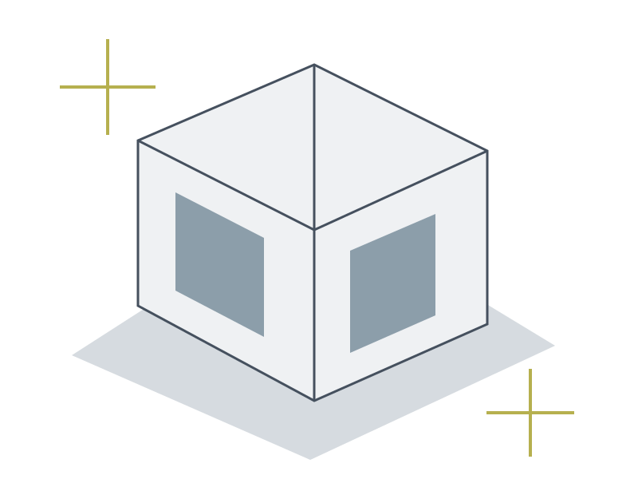

Space, considered.
A visual notebook about light, thresholds and the way a small change can make a room easier to use. Study the ordinary before adding more.

Study: a compact courtyard volume.
A shaded threshold separates the public edge from a quiet interior. Openings face the useful light rather than repeating a facade pattern.
Make the plan legible.
Keep a clear path. Put storage near the action it supports. Draw the swing of every door before choosing furniture.